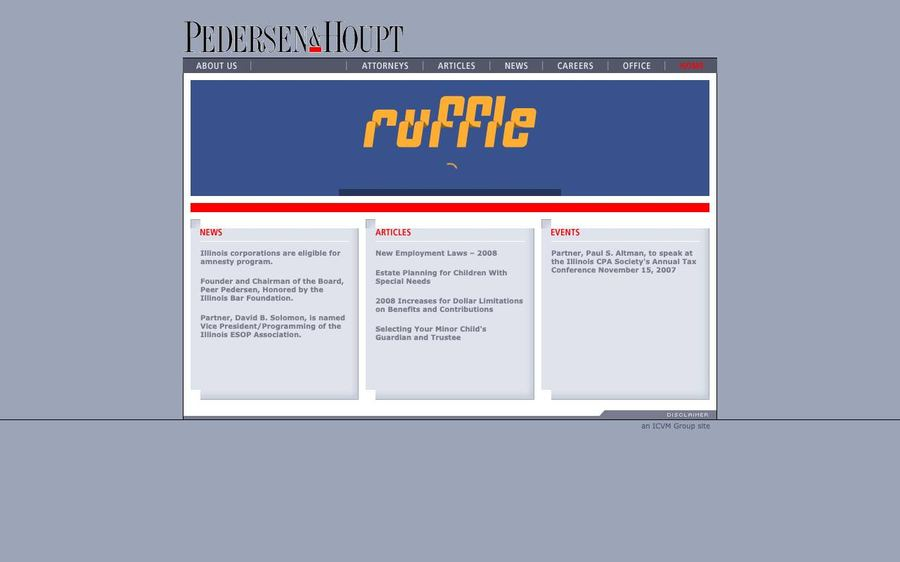
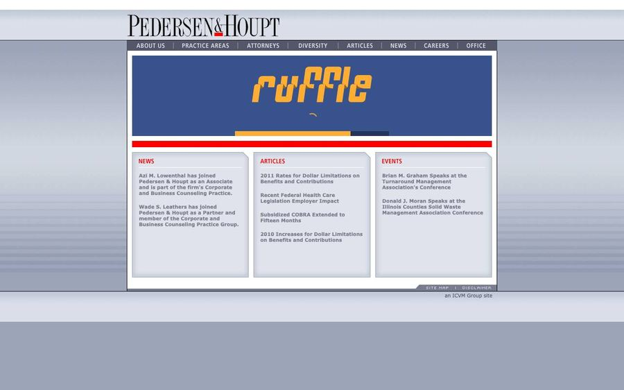
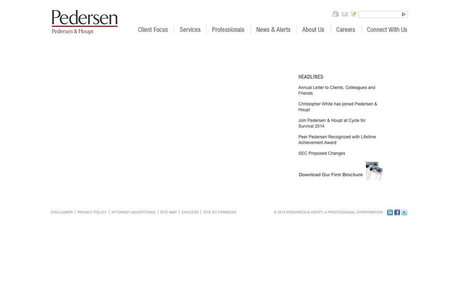
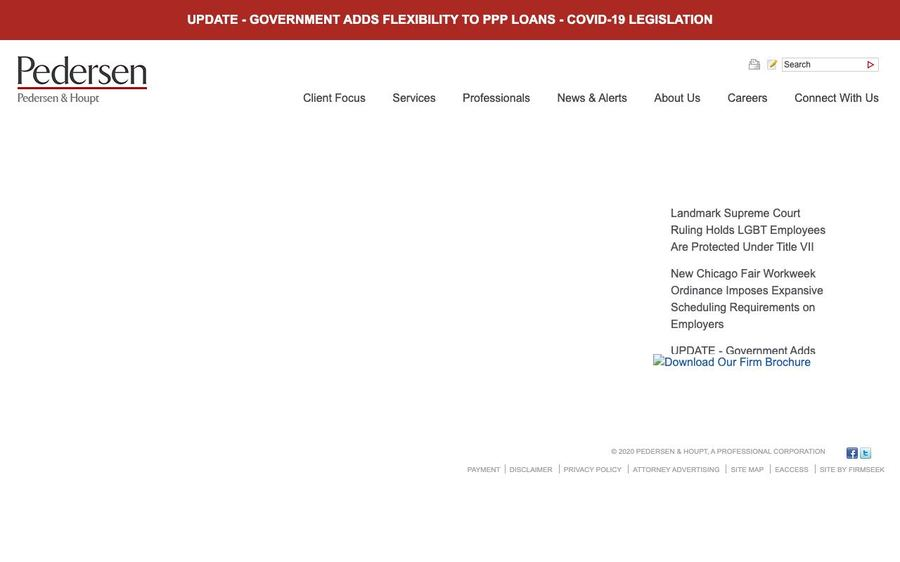
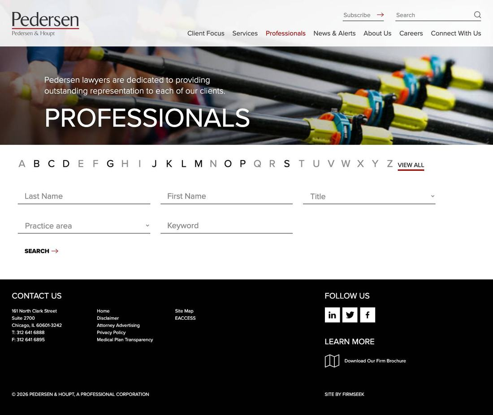
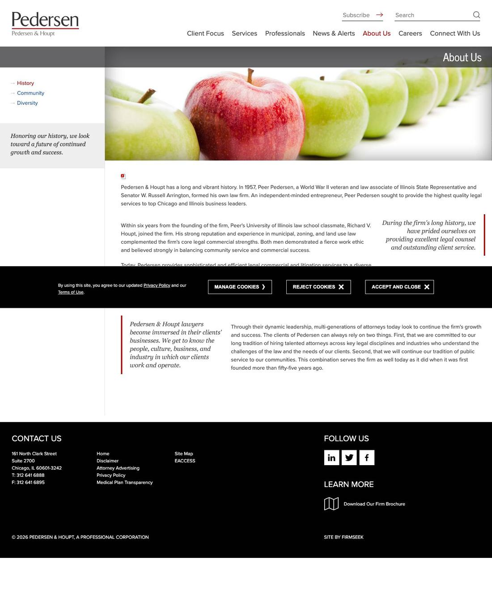
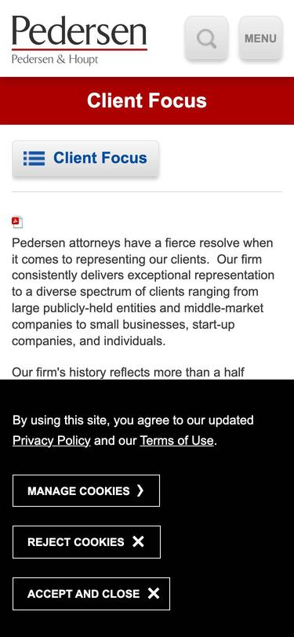
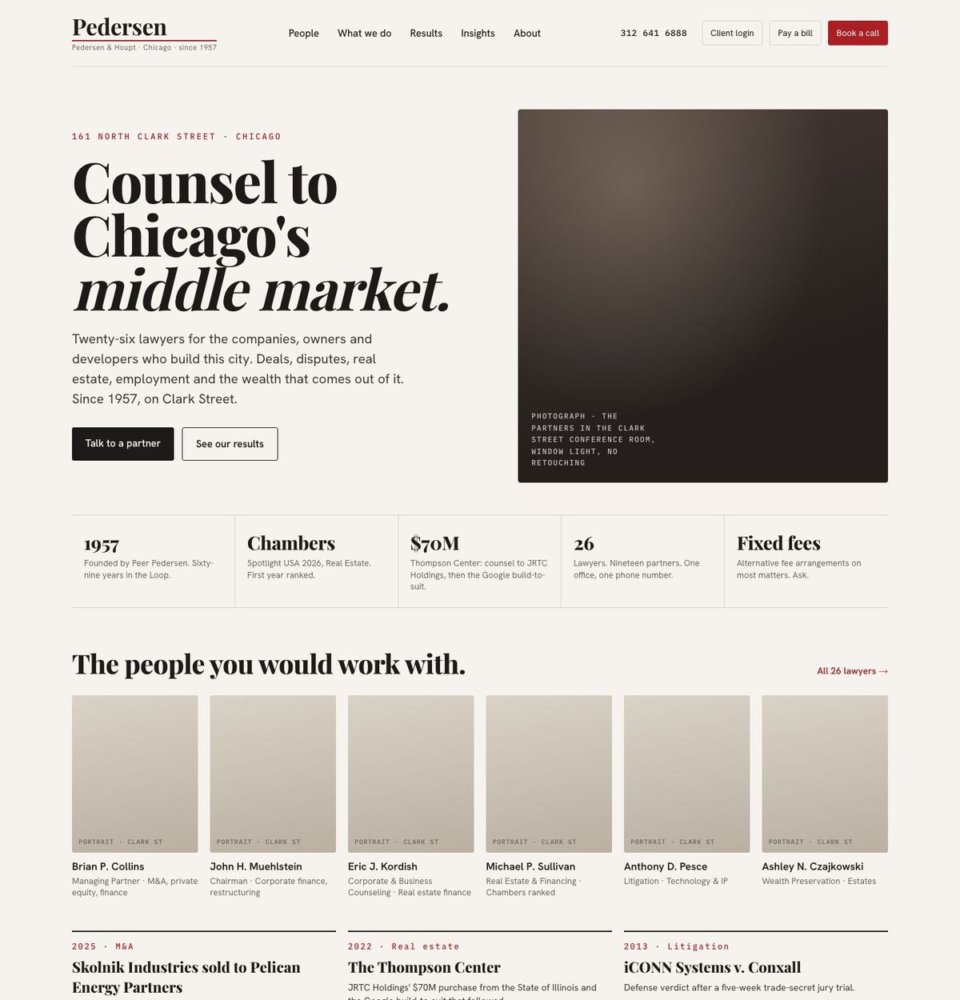
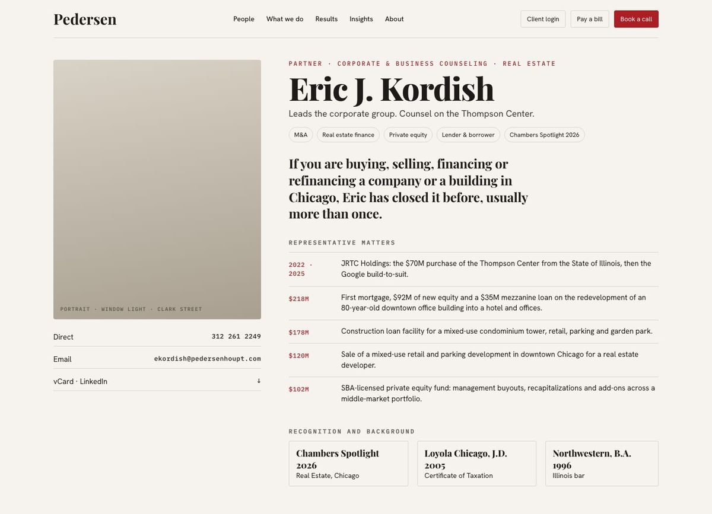
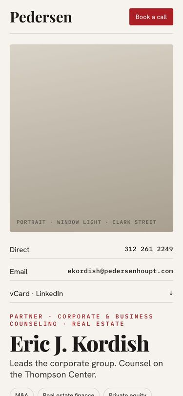

Pedersen & Houpt is a sixty-nine-year-old Chicago business firm with twenty-six lawyers, a Chambers listing this year and the Thompson Center on its record. Its website is a vendor template whose words were written in 2012 and whose current build dates from May 2021: stock photographs of skydivers and hard hats, a consent wall across the first screen, an About page that still says the firm is fifty-five years old. The content underneath is better than the site that carries it. This deck shows what is there, who it is for, what is bad, and what we would change.
Every page crawled, every key page screenshotted at 1440 and 375, Google's own audit tool run twice, and the homepage as the Wayback Machine saw it since 2000.






"This combination serves the firm as well today as it did when it was first founded more than fifty-five years ago." The firm was founded in 1957. Fifty-five years ago was 2012. It has been sixty-nine.
The only press item linked from the site is Crains.pdf: Crain's Chicago Business, 23 January 2013, the obituary of founder Peer Pedersen. Respectful, and thirteen years old.
The results page lists a $225M financing, a $168M office park, a Supreme Court case and a $93M bankruptcy settlement. None carries a year. The Chambers Spotlight 2026 news sits on the third screen of the homepage in 15px type.
The services pages are competent and brochure-like: "superlative service and responsive representation." The bios, by contrast, are specific. The rebuild should sound like the bios.
Off the site: LinkedIn 502 followers and two posts in nine months; X 214 followers, silent since January 2026. The newsletter sign-up requires a "Comments or Questions" field before it accepts an email address.

Firmseek template
A law-firm website vendor. The credit is in the footer of all 169 pages. The firm edits through the vendor's system.
2.4 MB, 15 requests
Three tile images are PNG files of 850 KB to 1.27 MB each; the hero is a 2,150-pixel JPEG. Lighthouse counts 1.9 MB of savings from sizing and 1.5 MB from modern formats.
About 1 MB each
Twenty-seven of them. The headshots are served at full size regardless of screen.
jQuery 3.7.1 · Proxima Nova via Typekit · GA4 and Tag Manager
Current libraries, one font family. The site is not insecure or broken. It is a 2021 build of a 2012 layout, with 2024 plumbing.
1.6 s of render-blocking resources on a phone
Stylesheets and fonts load before anything paints. Fixable in a rebuild by default.
Map renders blank
The Google Maps embed on Connect With Us draws an empty white box next to driving directions written for the Kennedy and the Dan Ryan.
One 404 in the firm's own sitemap
connect-Chicago.html is listed for search engines and does not exist. Every URL is marked "changefreq weekly"; the service pages were last modified in March 2021. HTTPS is on everywhere.
Scores are out of 100. Lab runs, not field data: Google's field sample for this site is too small to report.
A reconstruction of the snippet Google builds when a page has no description: it scrapes the navigation. Every attorney and every practice page is in this position.
Four of the seven show their own people. Redesign years are the first Wayback capture of each firm's current design; notes from reading each site on 9 September 2026.
We do not have the firm's analytics, so this is a model, stated as one: the six kinds of people who open pedersenhoupt.com, what each needs in ten seconds, and what the site gives them today.
Is this a real firm, do they do my kind of work, who would I talk to, is there proof.
Skydivers, "Grow Your Business," a wall over the firm's own sentence. No proof above the fold.
Has this firm done my matter before, with dates, and who is the lawyer to call.
Adjective paragraphs. Matters undated, on a page under Client Focus.
Pay and log in within one tap of the header.
"Payment" and "EACCESS" are footer links at the bottom of every page.
Who would I work with, is the firm growing, what is the culture.
An alphabet index, a 197-word careers page, the hires buried in the archive.
Bio, admissions, representative matters, publications.
The one visitor served: the bios are complete and specific, once past the wall.
Dated matters, a quote, a face beside the news.
Undated results, no attributed quote since 2024, news without images.
"Counsel to owner-led companies in the Midwest," not "Grow your business." Missing. The material exists in the FindLaw copy: middle market, owners, developers.
Faces on the index, bios that open with what the lawyer does for you and dated matters, a direct line, often a short video. Missing. Twenty-six consistent headshots and fifteen-matter bios already exist.
What we do for you, three dated matters, the lawyer to call, related insights. Missing. Thirty-four pages of adjectives instead of seven groups of answers.
Rankings beside the ask; matters with years; news with authors. Missing. The proof exists and is undated; Chambers 2026 is real and buried.
Pay a bill, client login, book a call. Every peer that rebuilt since 2023 moved these out of the footer. Missing. LawPay and EACCESS exist, in the footer.
Its people, its office, its city. Stock metaphors are the strongest template tell there is. Missing, in every era since 2000.
Under 2.5 s to the main image, no layout shift, tap targets over 44 px, no wall. Illinois requires no cookie banner for an analytics-only site. Missing.
A description on every page, one title, schema, a clean sitemap, so search results and answer engines use the firm's own words. Missing: 167 pages without a description.
One authored item a month, tagged by practice, a sign-up that asks for an email only. Missing. Five items a year, no faces; the form demands a comment.
Six findings, ranked by how much fixing each one improves the whole. Each states the defect, who it fails, and the fix. Then the verdict, and what the rebuild must not break.
Fails: the referred prospect, who meets a black bar before the firm's own sentence. 140 of 900 px on desktop, two fifths of a phone. Fix: no banner. Analytics-only sites in Illinois need none; if counsel insists, a 56 px bar, once.
Fails: every visitor except another lawyer. Fix: one sentence that names the client, a proof strip (1957, Chambers 2026, the Thompson Center, 26 lawyers, fixed fees), six faces, three dated matters.
Fails: the prospect and the lateral; bios open on a gray band, a tab strip and the wall, matters at the bottom. Fix: faces on the index; bios that open with "how I can help" and dated matters; a photo day at Clark Street.
Fails: anyone on a phone: 2.8 to 7.8 s to the main image, layout shift 0.40, eight tap targets too small. Fix: images at display size in WebP or AVIF, lazy below the fold, fonts preloaded. Under 600 KB and 2.5 s.
Fails: in-house counsel and rankers, who need dates. Fix: About rewritten in 400 words with the 2013 to 2026 story; a year on every matter; Chambers beside the ask; the Crain's PDF retired into a history page.
Fails: the prospect before they reach the site. Fix: templated descriptions, one title and one H1 per page, a clean sitemap, the Google profile claimed and answered, directories corrected to Suite 2700, a static map.
Corporate template, 2012 vintage, rebuilt in 2021. Skydivers over a law firm. The one word the site evokes is brochure. A client cannot say from the first screen who the firm is for or why it is different.
Template. Nothing is wrong by rule and nothing was chosen: the vendor's layout, stock metaphors, a category headline, default type. Above broken because it works, is consistent and is honest. Below professional because the copy is 2012, the map is blank and the first interaction is a consent wall.
The seven trapped inside is the bio content and the wordmark. Put the people first, write the homepage in the voice of the bios, and replace metaphor photography with the firm itself, and this site reaches signature territory without changing what the firm says about itself.
The ten-out-of-ten version of this exact site: a Chicago firm that looks like the room it works in. The homepage says in one sentence who it serves and shows the people who do the work, at 161 North Clark, in their own light. The bios read on a phone in the elevator on the way up to the meeting. The news reads as counsel, with a face beside it.
A real mark: a serif name, a single red line, the full name beneath. It has held since 2012 and it should anchor the rebuild. The red, #AB1E23, is the accent this deck wears.
Dollar figures, deal shapes, industries. Fifteen matters on one partner's page. This is the proof clients look for and it becomes the front of the new site, not the bottom of a tab.
Same backdrop, same crop, same light. A rare discipline on a firm site. They belong on the index, at size, with names and practices, until the photo day replaces them.
Three pages under "Client Focus" say exactly what a middle-market owner wants to hear. Today they are a sidebar. They are the homepage.
Also kept: the Chambers Spotlight 2026 badge, the LawPay and EACCESS client tools (moved up front), and the 2020 alert cadence as proof the firm can publish fast when it matters.
Our read, labeled as ours. Eight sweeping changes, three directions and the one we would take, and two first sketches. No scope list, no timeline, no price.
"Counsel to Chicago's middle market, since 1957," and a homepage built as that argument: who we serve, the proof, the people. Slide 02.
Twenty-six faces on the index. The bio becomes the product page. One photo day at 161 North Clark makes the year's imagery. Slides 03, 04.
Thirty-four pages become seven groups, each opening with what it does for a client, three dated matters, the lawyer to call. Slide 05.
A results timeline from 1957 with Peer Pedersen's deals in it. Rankings beside the ask. News with a face. The history told, not linked. Slides 05, 06.
Pay a bill, client login and book a call move from the footer to the header on every page. Slide 02.
One authored item a month with a face, tagged by practice. A sign-up that asks for an email only. The 2020 pace, made normal. Slide 06.
Fast by default, editable by the firm, a description and schema on every page, no wall, the Google profile claimed. Slides 07 to 10.
Keep the wordmark and the red. Retire the stock. A bold serif, a clean grotesk, photography of real people in real rooms. Slide 16.
What we would not do: a five-year package or an invented tagline. The firm has the words: We Listen, It's About Results, Alternative Fee Arrangements. Put them where a client looks.
Idea: 161 North Clark is the brand: the people, the rooms, the city out the window. Type: a bold editorial serif for headlines, a clean grotesk for reading. Color: warm paper, ink, the firm's red as the only accent. Pictures: documentary photography of the partners and the office, window light. Says: we are real, we are here, since 1957.
Idea: matters, dates and numbers are the design. Type: a tabular grotesk, numerals at display size. Color: monochrome with the red. Pictures: few; documents, tombstones, the city as texture. Says: results. Risk: reads as a bank and loses the warmth "We Listen" promises.
Idea: judgment and discretion. Type: serif-led, generous white space. Color: ivory, charcoal, the red used sparingly. Pictures: formal portraits, archival material for the history. Says: heritage. Risk: the smallest step from where the site is; a client may not notice it changed.
Why the first: the firm's real asset is people at an address, and no peer in the set is showing Chicago itself. It moves the site furthest from the template while staying unmistakably a law firm, and it makes the photo day the center of the project.



One sentence about middle-market owners and their companies, the firm's own people in the photograph, proof beside it: Chambers, 1957, the Thompson Center.
Twenty-six attorneys by face, practice and one line. The bio opens with what the lawyer does for you and the matters that prove it.
Right-sized images in modern formats, nothing blocking the first paint. From 2.8 to 7.8 seconds today to under 2.5 is a build default, not an add-on.
Consent handled in a slim bar or not at all, given what the site actually tracks. Every link big enough to tap.
A description on every page, one title, one H1, a clean sitemap, a claimed and answered Google profile. Search results that read like the firm wrote them.
Each item carries its author's photograph and a practice tag. A visitor can follow one practice. The 2020 speed becomes the normal pace.
What this deck does not do: propose a scope, a timeline or a price. Those come after the firm decides what it wants the site to be. This is the case that it should be something, and a first look at what.
A Chicago studio that builds sites, brands and the systems behind them for companies that have a real story and a website that does not tell it. This audit was run on 9 September 2026; every page was measured, every screenshot was taken by us, the two sketches are ours, and every claim has a source on the previous slide.